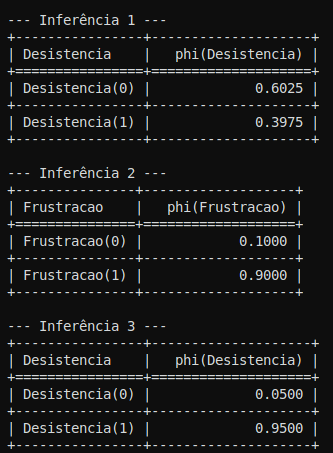

3. Redes Bayesianas
Em Inteligência Artificial (IA), a capacidade de lidar com a incerteza é crucial para que os agentes possam operar de forma eficaz em ambientes complexos e imprevisíveis. Embora os agentes lógicos baseados em verdades absolutas tenham seu lugar, a realidade do mundo exige uma abordagem que permita expressar graus de crença e tomar decisões racionais mesmo com informações incompletas [RUSSELL; NORVIG, 2010, p. 56]. É neste cenário que as Redes Bayesianas emergem como uma ferramenta poderosa e eficiente.
Definição e Motivação para o Uso de Redes Bayesianas
As Redes Bayesianas, também conhecidas como redes de crença Bayesianas (Bayesian belief networks - BBNs) [LUGER, 2009, p. 390], são modelos gráficos que representam as relações probabilísticas entre um conjunto de variáveis. Russell e Norvig (2010, p. 55) explicam que elas fornecem uma "maneira sistemática de representar essas relações explicitamente na forma de redes Bayesianas" para capturar o conhecimento incerto de forma natural e eficiente [RUSSELL; NORVIG, 2010, p. 55].
A motivação para o uso de redes Bayesianas deriva das limitações das abordagens anteriores:
- Incerteza Inerente ao Mundo Real: Agentes de IA frequentemente precisam lidar com informações incompletas ou ruidosas, seja por observabilidade parcial do ambiente ou por um comportamento não determinístico de suas ações [RUSSELL; NORVIG, 2010, p. 54]. A lógica proposicional e de primeira ordem, que opera com certezas (verdadeiro/falso), é insuficiente para modelar esses graus de incerteza [LUGER, 2009, p. 292].
- Transição de Agentes Lógicos para Probabilísticos: Enquanto um agente lógico mantém um estado de crença baseado em verdades absolutas, o que pode levar ao "problema da qualificação" (onde é impossível listar todas as exceções a uma regra), um "agente probabilístico pode ter um grau numérico de crença entre 0 (para sentenças que são certamente falsas) e 1 (certamente verdadeiras)" [RUSSELL; NORVIG, 2010, p. 56]. As Redes Bayesianas fornecem a estrutura para representar e raciocinar com esses graus de crença.
- Complexidade da Distribuição Conjunta Completa: Representar o conhecimento incerto através de uma distribuição conjunta completa de todas as variáveis do domínio se torna inviável para problemas realistas, pois a tabela resultante teria um tamanho exponencial em relação ao número de variáveis [LUGER, 2009, p. 347]. Russell e Norvig (2010, p. 55) apontam que as redes Bayesianas foram inventadas para permitir a "representação eficiente e o raciocínio rigoroso com conhecimento incerto". Elas "superam muitos problemas dos sistemas de raciocínio probabilístico das décadas de 1960 e 1970" [RUSSELL; NORVIG, 2010, p. 19].
Conceitos Centrais
As Redes Bayesianas são fundamentadas em três conceitos centrais que lhes conferem poder e eficiência:
- Estrutura de Grafo Acíclico Dirigido (DAG - Directed Acyclic Graph):
- Uma rede Bayesiana é um grafo direcionado no qual cada nó carrega informações de probabilidade.
- Cada nó corresponde a uma variável aleatória, que pode ser discreta ou contínua.
- Ligações por setas conectam pares de nós, indicando relações de "genitor-filho" (causa-efeito).
- Crucialmente, o grafo não tem ciclos direcionados e, portanto, é um grafo acíclico dirigido. Essa propriedade garante que não há dependências circulares e que a rede define uma distribuição de probabilidade consistente e única. Luger (2009, p. 391) enfatiza que "influências causais são direcionadas" e "o raciocínio de influência causal não é circular".

Figura 2: Exemplo de Rede Bayesiana simples.
Nesta figura 2 , cada nó representa uma variável aleatória, e as setas indicam dependência condicional entre elas. Essa estrutura permite fatorar a distribuição conjunta e realizar inferência probabilística eficiente.
- Independência Condicional:
- Este é o pilar da eficiência das Redes Bayesianas. "Cada nó é condicionalmente independente de seus não descendentes, dados seus genitores".
- Russell e Norvig (2010, p. 55) ressaltam a importância da "independência e relacionamentos de independência condicional" para simplificar as representações probabilísticas. Nos slides, o exemplo de MaryCalls e JohnCalls ilustra que, dado o estado do alarme, a chamada de John não influencia a chamada de Mary, mesmo que ambos sejam influenciados indiretamente por roubos ou terremotos.
- Essa propriedade permite que a probabilidade de um nó dependa apenas de seus genitores diretos, e não de todas as outras variáveis na rede, o que reduz drasticamente o número de parâmetros necessários para representar a distribuição conjunta.
- Fatoração da Distribuição Conjunta:
- A semântica de uma Rede Bayesiana é definida pela forma como ela representa uma distribuição conjunta específica sobre todas as variáveis.
- As redes Bayes definem cada entrada na distribuição conjunta da seguinte forma: $P(X_1, ..., X_n) = \prod_{i=1}^{n} P(X_i | Parents(X_i))$. Esta é uma fatoração compacta da distribuição conjunta.
- Como demonstrado na aula 16 e por Russell e Norvig (2010, p. 58), essa fatoração é uma aplicação da regra da cadeia da probabilidade, onde a independência condicional permite que cada termo $P(X_i | X_{i-1}, ..., X_1)$ seja simplificado para $P(X_i | Parents(X_i))$, desde que os nós sejam ordenados de forma consistente com a estrutura do grafo.
Construção e Inferência em Redes Bayesianas
A construção de uma Rede Bayesiana segue um processo sistemático que aproveita a estrutura de dependências causais:
-
Construção da Rede:
- Nós: Primeiro, determine o conjunto de variáveis aleatórias necessárias para modelar o domínio. A ordem dessas variáveis ($X_1, ..., X_n$) é importante; uma ordem em que as causas precedem os efeitos geralmente resulta em uma rede mais compacta e esparsa.
- Ligações: Para cada variável $X_i$ (de $i=1$ a $n$), escolha um conjunto mínimo de genitores de $X_1, ..., X_{i-1}$ que a influenciam diretamente. Para cada genitor selecionado, insira uma ligação direcionada para $X_i$. Esse passo garante a propriedade de independência condicional.
- CPTs (Tabelas de Probabilidade Condicional): Para cada nó $X_i$, escreva a tabela de probabilidade condicional $P(X_i | Parents(X_i))$. Essas tabelas quantificam o efeito dos genitores no nó com um número finito de parâmetros. Este método de construção garante que a rede é acíclica e minimiza redundâncias, assegurando a consistência.
-
Inferência na Rede:
- A tarefa primária da inferência probabilística é calcular a distribuição de probabilidade a posteriori para um conjunto de variáveis de consulta, dada alguma evidência observada. Por exemplo, no cenário do alarme, podemos perguntar a probabilidade de um roubo dado que John ligou e Mary ligou, ou seja, $P(\text{Roubo} | \text{JohnLigou}, \text{MaryLigou})$.
- Inferência por Enumeração: A aula 17 e Russell e Norvig (2010, p. 522) explicam que qualquer probabilidade condicional pode ser calculada somando-se os termos da distribuição conjunta completa. Uma vez que a Rede Bayesiana fornece uma representação fatorada da distribuição conjunta, uma consulta pode ser respondida calculando-se somas de produtos de probabilidades condicionais da rede.
- Complexidade e Eficiência: Embora a inferência por enumeração seja conceitualmente simples, ela pode ser computacionalmente cara para redes grandes. Para redes complexas, como uma rede de seguro de carro com 27 variáveis, a inferência exata pode exigir milhões de operações. A chave para uma inferência eficiente é evitar cálculos repetidos.
- Inferência Aproximada: Para lidar com a intratabilidade da inferência exata em grandes redes, são utilizados métodos de inferência aproximada, como os algoritmos de Monte Carlo. Esses métodos geram eventos aleatórios baseados nas probabilidades da rede e, com amostras suficientes, podem se aproximar arbitrariamente da verdadeira distribuição de probabilidade. Os slides da aula 17 mencionam a amostragem direta e a Cadeia de Markov Monte Carlo (MCMC) como exemplos.
A Regra de Bayes como Base para Raciocínio Diagnóstico
A Regra de Bayes é fundamental para o raciocínio diagnóstico e para o funcionamento das Redes Bayesianas. Como afirmam Russell e Norvig (2010, p. 496), a equação $P(b | a) = P(a | b)P(b) / P(a)$ (ou suas formas mais gerais) "subjaz a maioria dos sistemas modernos de IA para inferência probabilística".
Em contextos de diagnóstico, frequentemente temos informações causais (qual a probabilidade de um sintoma dado uma doença, $P(\text{sintoma} | \text{doença})$) e desejamos inferir a causa (qual a probabilidade de uma doença dado um sintoma, $P(\text{doença} | \text{sintoma})$). A Regra de Bayes permite essa inversão de probabilidades, tornando-a essencial para sistemas de diagnóstico, como os aplicados em medicina ou para identificar falhas em sistemas [LUGER, 2009, p. 338].
A rede bayesiana apresentada nos slides ilustra o problema do alarme, onde o objetivo é diagnosticar um roubo ou terremoto dadas as chamadas de John e Mary. Calcular $P(\text{Roubo} | \text{JohnLigou}, \text{MaryLigou})$ é um exemplo clássico de raciocínio diagnóstico que utiliza os princípios da Regra de Bayes sobre a estrutura da rede para inferir as causas a partir dos efeitos observados.
Comparação com Lógica Proposicional em Termos de Escalabilidade
A principal vantagem das Redes Bayesianas sobre a lógica proposicional (e mesmo a lógica de primeira ordem em certos aspectos) em termos de escalabilidade reside na sua capacidade de lidar com incerteza de forma compacta e eficiente.
- Lógica Proposicional: Agentes baseados em lógica proposicional constroem o que Russell e Norvig (2010, p. 265) chamam de "modelo lógico completo dos efeitos das ações" para inferir o estado do mundo. No entanto, em domínios reais, a quantidade de informações necessárias para ter certeza absoluta sobre cada proposição é esmagadora. Isso leva a um "problema de qualificação" onde "é inviável enumerar todas as exceções" [RUSSELL; NORVIG, 2010, p. 72]. Além disso, a representação do estado de crença pode se tornar muito grande para ser gerenciada.
- Redes Bayesianas: Ao explorar a independência condicional, as Redes Bayesianas superam a complexidade exponencial da distribuição conjunta. Em vez de uma única tabela gigantesca, elas utilizam tabelas de probabilidade condicional (CPTs) menores para cada nó, dependendo apenas de seus genitores diretos. "O fato de que cada parâmetro da rede tem um significado preciso em termos de apenas um pequeno conjunto de variáveis é crucial para a robustez e facilidade de especificação dos modelos". Isso permite que modelos de domínios complexos sejam construídos de forma modular e escalável, tornando o raciocínio probabilístico computacionalmente viável em muitas situações práticas. A transição para modelos probabilísticos também permite que os sistemas de IA aprendam com a experiência e combinem o melhor da IA clássica e das redes neurais [RUSSELL; NORVIG, 2010, p. 19].
Exemplos Discutidos em Aula e Referências
Diversos exemplos e aplicações foram abordados, reforçando a relevância das Redes Bayesianas:
- Exemplo do Alarme de Bruce Banner: Este foi o exemplo central usado nos slides da aula 16 e 17. Ele ilustra como construir uma rede simples para um sistema de alarme que pode ser ativado por roubo ou terremoto, e como as chamadas de vizinhos (John e Mary) dependem do alarme. O exemplo detalha o cálculo da probabilidade de um roubo dadas as chamadas dos vizinhos, demonstrando a inferência exata por enumeração.
- Redes Bayesianas Híbridas: Os slides da aula 16 e 17 mencionam como lidar com variáveis contínuas (como temperatura ou pressão) em Redes Bayesianas, seja através da discretização, do uso de distribuições de probabilidade conhecidas (como a distribuição Gaussiana), ou de métodos não paramétricos. Também é discutido como integrar variáveis contínuas e discretas (Redes Bayesianas Híbridas), por exemplo, usando uma distribuição condicional linear-gaussiana. Russell e Norvig (2010, p. 520) também discutem a inclusão de variáveis contínuas em Redes Bayesianas.
- Modelos Ocultos de Markov (HMMs): Como demonstrado na aula 19, os HMMs são um tipo específico de modelo probabilístico temporal, onde o estado do processo é descrito por uma única variável aleatória discreta. Eles são abordados como um caso especial de Redes Bayesianas Dinâmicas para raciocínio ao longo do tempo. As aplicações de HMMs incluem reconhecimento de fala e processamento de linguagem natural. Os slides mencionam materiais complementares como
UmbrellaWorld.pyeDanielJurafsky2021.pdf. - Filtros de Kalman: Apresentados na aula 20, os Filtros de Kalman são outro exemplo de raciocínio probabilístico ao longo do tempo, focados em problemas de estimação e predição de estados em sistemas dinâmicos, como o rastreamento de objetos (e.g., aviões). Eles modelam o conhecimento do estado como uma "mancha gaussiana" (Gaussian blob) e atualizam a estimativa combinando a predição do estado com as leituras dos sensores. Russell e Norvig (2010, p. 584) os incluem no capítulo sobre raciocínio probabilístico ao longo do tempo.
A flexibilidade e o rigor matemático das Redes Bayesianas as tornam uma das ferramentas mais importantes e amplamente utilizadas em IA para lidar com a incerteza, sendo aplicadas em campos como diagnóstico médico, sistemas de recomendação, bioinformática e monitoramento de sistemas complexos [RUSSELL; NORVIG, 2010, p. 70, 74].
Projeto
Cenário: Aula Particular de Piano
Para reforçar os conceitos, implementamos um exemplo prático de Rede Bayesiana utilizando a biblioteca pgmpy.
O cenário modelado envolve uma situação didática em que um(a) aluno(a) de piano pode se sentir frustrado(a) ou até desistir das aulas, dependendo de dois fatores principais: se estudou e se a música é complexa.
As variáveis consideradas foram:
- AlunoSemPratica: indica se o(a) aluno(a) chegou à aula sem ter praticado.
- MusicaComplexa: indica se a música proposta para a aula é de difícil execução.
- Frustracao: representa o estado emocional do aluno frente à aula.
- Desistencia: variável que indica se o(a) aluno(a) desiste das aulas de piano.
As dependências entre as variáveis seguem uma estrutura de grafo acíclico dirigido (DAG):
Construção do Modelo
-
Definição da estrutura (DAG):
-
AlunoSemPratica e MusicaComplexa influenciam Frustracao.
-
Frustracao influencia Desistencia.
-
Tabelas de Probabilidade Condicional (CPDs):
-
São definidas para todas as variáveis, considerando as dependências.
-
Exemplo: \$P(\text{Frustracao} \mid \text{AlunoSemPratica}, \text{MusicaComplexa})\$ quantifica a chance de frustração dependendo das outras duas variáveis.
-
Verificação e Inferência:
-
O modelo é verificado quanto à sua consistência com
.check_model(). -
Utiliza-se o algoritmo de Eliminação de Variáveis para responder perguntas probabilísticas, como:
- Qual a probabilidade de desistência se o aluno não praticou e a música é complexa?
- Qual a chance de frustração se o aluno praticou e a música é simples?
- Qual a probabilidade de desistência mesmo sem frustração?
Código Python
#import pandas as pd
from pgmpy.models import DiscreteBayesianNetwork
from pgmpy.factors.discrete import TabularCPD
from pgmpy.inference import VariableElimination
# 1. Definindo a estrutura da rede - Contexto: Aula Particular de Piano
# As arestas representam as dependências: (causa, efeito)
model = DiscreteBayesianNetwork([
('AlunoSemPratica', 'Frustracao'),
('MusicaComplexa', 'Frustracao'),
('Frustracao', 'Desistencia')
])
# 2. Definindo as Tabelas de Probabilidade Condicional (CPDs)
# AlunoSemPratica: P(ASP) - Probabilidade do aluno não ter praticado
cpd_aluno_sem_pratica = TabularCPD(variable='AlunoSemPratica', variable_card=2, values=[[0.3], [0.7]])
# Card = 2 significa que a variável tem 2 estados (True/False ou 0/1)
# Values = [[P(AlunoSemPratica=True)], [P(AlunoSemPratica=False)]]
# MusicaComplexa: P(MC) - Probabilidade da música ser complexa
cpd_musica_complexa = TabularCPD(variable='MusicaComplexa', variable_card=2, values=[[0.4], [0.6]])
# Frustracao: P(F | ASP, MC) - Probabilidade de frustração dadas as condições
# A ordem dos valores segue: (ASP=T, MC=T), (ASP=T, MC=F), (ASP=F, MC=T), (ASP=F, MC=F)
cpd_frustracao = TabularCPD(variable='Frustracao', variable_card=2,
values=[[0.85, 0.6, 0.5, 0.1], # P(Frustracao=True | ASP, MC)
[0.15, 0.4, 0.5, 0.9]], # P(Frustracao=False | ASP, MC)
evidence=['AlunoSemPratica', 'MusicaComplexa'],
evidence_card=[2, 2])
# Desistencia: P(D | F) - Probabilidade de desistir dada a frustração
cpd_desistencia = TabularCPD(variable='Desistencia', variable_card=2,
values=[[0.7, 0.05], # P(Desistencia=True | F)
[0.3, 0.95]], # P(Desistencia=False | F)
evidence=['Frustracao'],
evidence_card=[2])
# 3. Adicionando as CPDs ao modelo
model.add_cpds(cpd_aluno_sem_pratica, cpd_musica_complexa, cpd_frustracao, cpd_desistencia)
# 4. Verificando a consistência do modelo
# É sempre bom verificar se as CPDs foram adicionadas corretamente e se o modelo é válido.
print("Modelo válido?", model.check_model())
# 5. Realizando Inferência
# Agora, a parte divertida! Vamos fazer perguntas ao nosso modelo.
# Criamos um objeto de inferência a partir do nosso modelo.
infer = VariableElimination(model)
# Pergunta 1: Qual a probabilidade de Desistência se o Aluno não praticou e a Música é Complexa?
# P(Desistencia | AlunoSemPratica=True, MusicaComplexa=True)
print("\n--- Inferência 1 ---")
prob_desistencia_aluno_musica = infer.query(variables=['Desistencia'],
evidence={'AlunoSemPratica': 0, 'MusicaComplexa': 0})
# 0 geralmente representa True, 1 representa False na pgmpy por padrão, mas pode variar.
# É importante verificar a ordem dos estados definidos na CPD.
# No nosso caso, 0 é True e 1 é False para todas as variáveis.
print(prob_desistencia_aluno_musica)
# Pergunta 2: Qual a probabilidade de Frustração se o Aluno praticou e a Música é Simples?
# P(Frustracao | AlunoSemPratica=False, MusicaComplexa=False)
print("\n--- Inferência 2 ---")
prob_frustracao_aluno_preparado = infer.query(variables=['Frustracao'],
evidence={'AlunoSemPratica': 1, 'MusicaComplexa': 1})
print(prob_frustracao_aluno_preparado)
# Pergunta 3: Qual a probabilidade de Desistência se não há Frustração?
# P(Desistencia | Frustracao=False)
print("\n--- Inferência 3 ---")
prob_desistencia_sem_frustracao = infer.query(variables=['Desistencia'],
evidence={'Frustracao': 1})
print(prob_desistencia_sem_frustracao)
Resultado

Considerações Finais
Esse projeto exemplifica o poder das Redes Bayesianas para modelar situações do mundo real que envolvem incerteza, permitindo decisões informadas a partir de evidências parciais. Ele também evidencia a escalabilidade do modelo: novos fatores poderiam ser adicionados ao DAG (como motivação, feedback dos pais etc.), sem reconstruir todo o sistema, o que é uma característica crucial para agentes de IA operando em domínios complexos e dinâmicos.
Referências
LUGER, George F. Artificial Intelligence: Structures and Strategies for Complex Problem Solving. 6. ed. Boston: Pearson Education, 2009.
RUSSELL, Stuart J.; NORVIG, Peter. Artificial Intelligence: A Modern Approach. 3. ed. Upper Saddle River: Prentice Hall, 2010.
AnAj, Public domain, via Wikimedia Commons
JURAFSKY, Daniel; MARTIN, James H. Speech and Language Processing. [S. l.]: Stanford University, 2021.
FGA0221 – IA - 16. Redes Bayesianas. Material de aula. [S. l.: s. n.], [entre 2023 e 2025].
FGA0221 – IA - 17. Redes Bayesianas – 2ª Parte. Material de aula. [S. l.: s. n.], [entre 2023 e 2025].
FGA0221 – IA - 19. Raciocínio probabilístico ao longo do tempo – Parte 2. Material de aula. [S. l.: s. n.], [entre 2023 e 2025].
FGA0221 – IA - 20. Filtro de Kalman: Algoritmo. Material de aula. [S. l.: s. n.], [entre 2023 e 2025].
BEST, Kalman filter Expanation. [S. l.: s. n.], [entre 2023 e 2025]. (BEST, Kalman filter Expanation.pdf) ```
| Versão | Data | Modificação | Nome | GitHub |
|---|---|---|---|---|
1.0 |
16/07/2025 | Criação do documento | Ana Beatriz Norberto | @ananorberto |